Nomads: an island that makes itself
Branch island-gen, run as an offline copy with the random brain. Not merged or deployed.
How the island is made
- Uplift. A warped oval rises out of the sea, with ridged ranges and low basins.
- Erosion. Rivers cut valleys by the stream power law and hillsides creep. The sea floods the lowest valleys into inlets.
- Climate. Four seasons of wind, each from its own spread of directions, carry vapor in off the sea. Air pushed up over the ranges rains out, and the far side sits in a rain shadow. It gets colder with height, and evaporation follows sun, wind, and fog.
- Water. Whatever rain isn't evaporated runs off or soaks in. Lakes fill only where inflow beats evaporation, rivers run from source to sea, and the water table rises to meet the valley floors.
- Ground. Soil is deep on gentle ground and gone on steep ground. Sand builds on salty shores and peat in waterlogged hollows. Soil moisture is tracked season by season.
- Plants. Trees, shrubs, marsh plants, and grass compete for moisture, soil, and shelter. Nothing is labeled forest or heath. Those are just the places where one of them wins.
In the game
- Tiles, heights, and the things lying around at the start all come from those fields.
- The ground is painted from the plant cover itself, with rivers, smooth shorelines, and contour lines.
- Newcomers and animals come ashore on the main island, never on an islet.
- Only lakes freeze in winter. The sea stays open.
- The daily wind wanders around the same prevailing wind that shaped the rain.
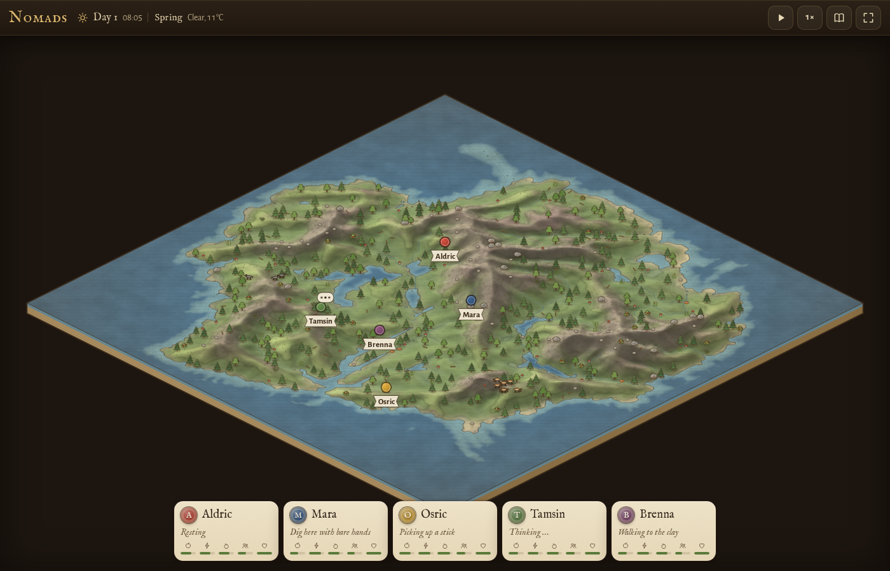
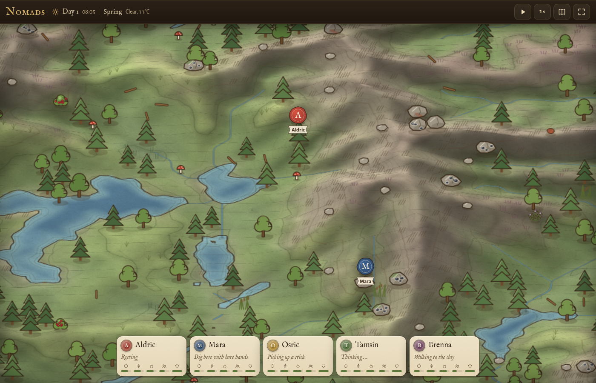
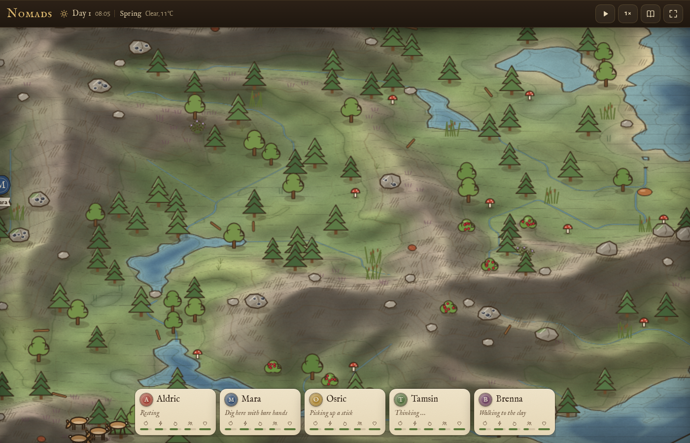
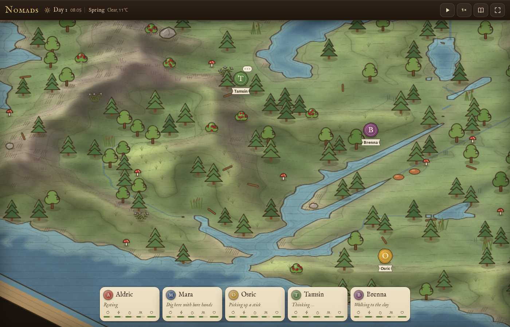
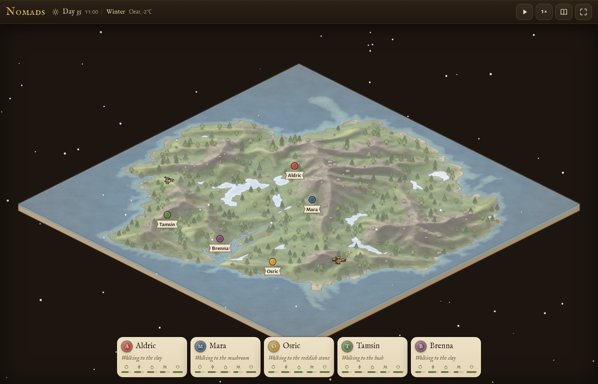
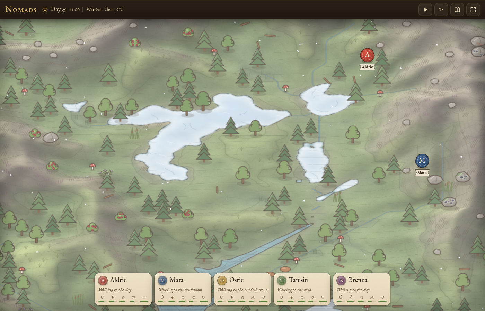
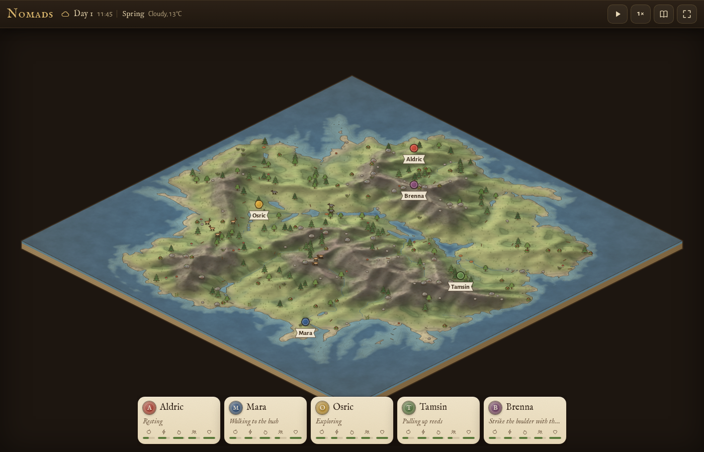
The layers behind seed 1
Top-down, north up. The game view above is the same island turned 45 degrees.
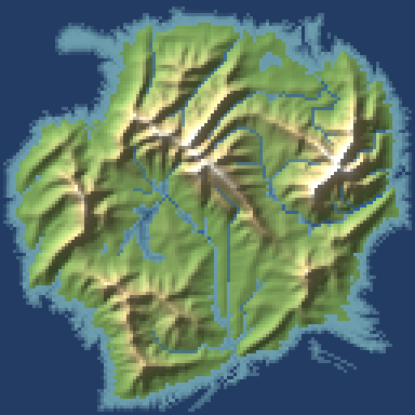
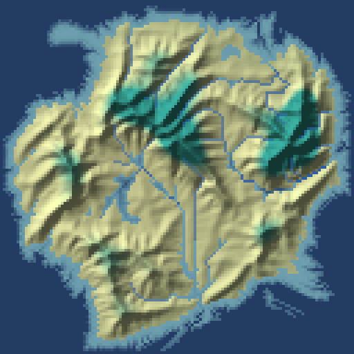
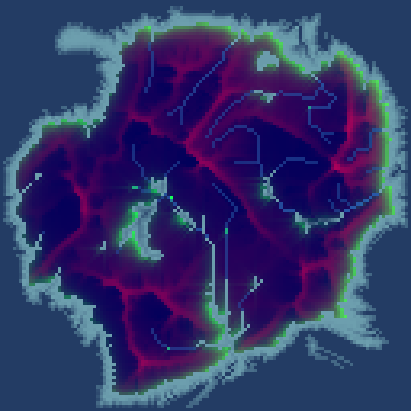
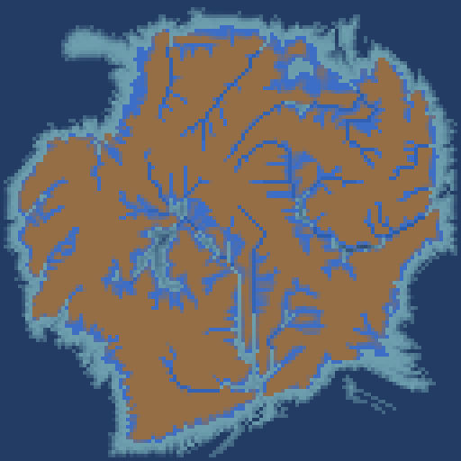
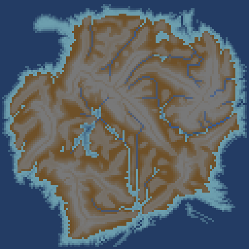
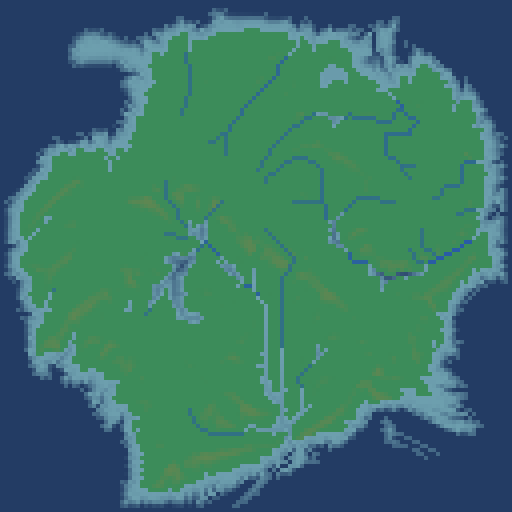
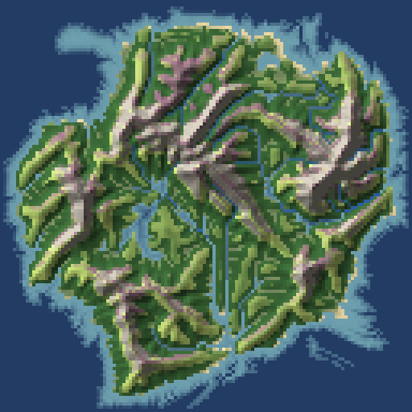
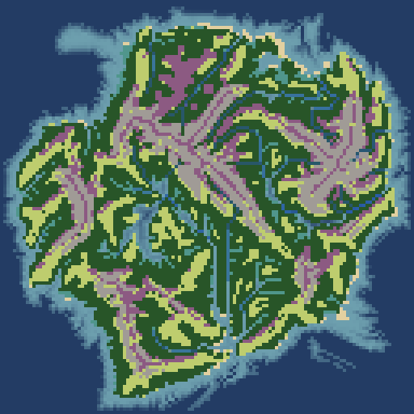